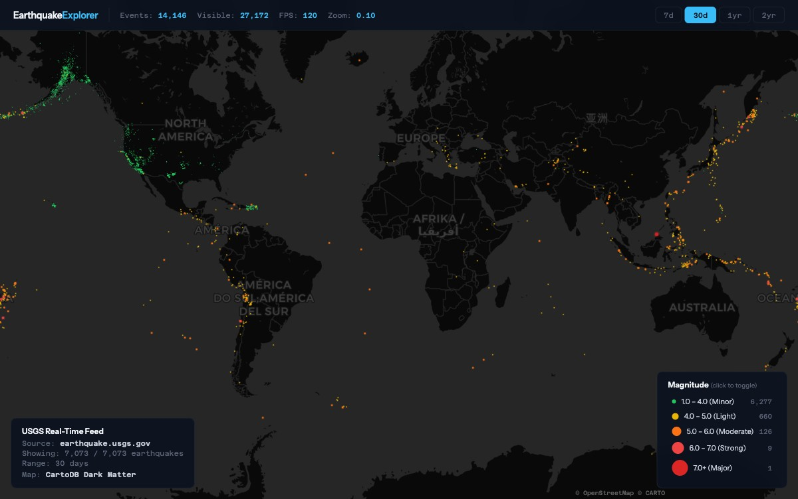
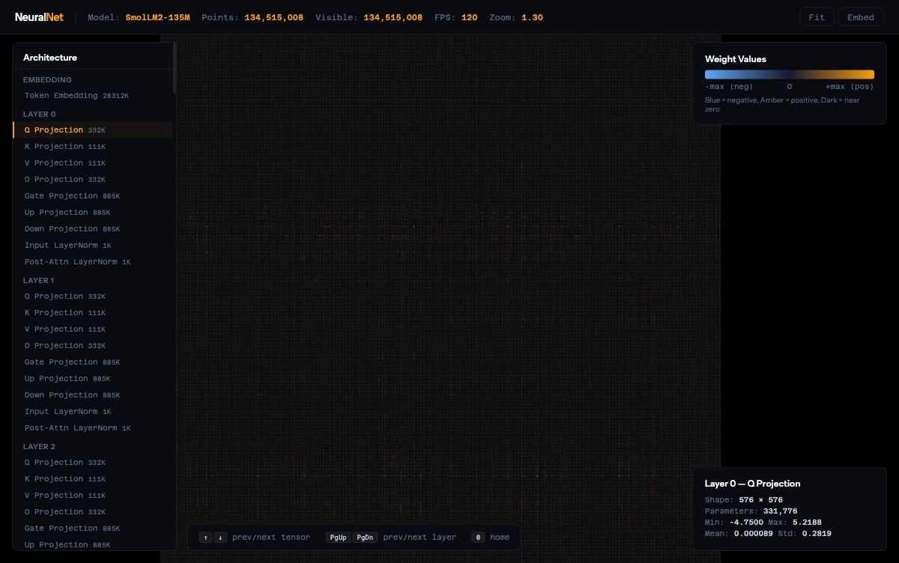
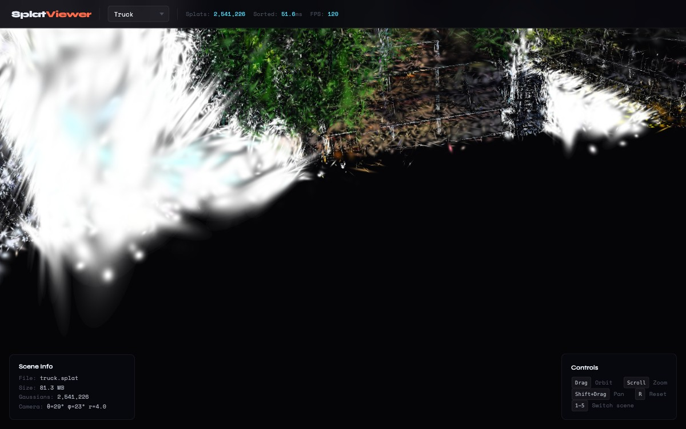
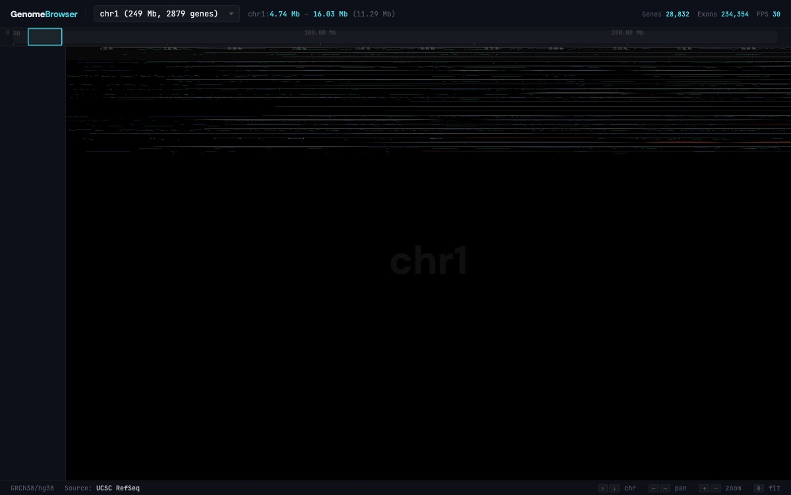
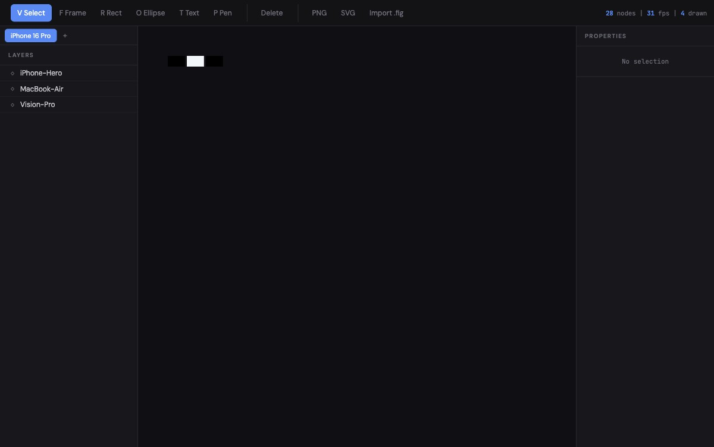

A high-performance WASM canvas engine written in Rust. Spatial culling, instanced WebGL2, CRDT collaboration, and a full scene graph — in 494KB.
What you can build
Every demo runs entirely in the browser. Zero external dependencies.

Earthquake Explorer
WebGL2 + Map TilesLive USGS seismic data on CartoDB Dark Matter tiles. Two-canvas architecture: raster map behind GPU point clouds. Filter by magnitude and time range.

Neural Net Visualizer
134M PointsEvery weight of SmolLM2-135M rendered as a colored pixel. Browse 30 transformer layers, inspect tensor statistics, navigate by architecture.

Gaussian Splat Viewer
2.5M Splats3D Gaussian Splatting renderer. Load .splat files, orbit camera, real-time depth sorting on Web Workers.

Genome Browser
234K ExonsNavigate the human genome (GRCh38). 28K genes and 234K exons across 24 chromosomes with ideogram, ruler, and gene labels.

Design Tool
Full EditorFigma-like vector editor with layers, properties, pen tool, boolean ops, grouping, undo/redo, PNG/SVG export, and .fig import.
Get started in 10 lines
Import the WASM module, create an engine, add shapes, render.
main.js 1import init, { CanvasEngine } from './pkg/rendero.js'; 2await init(); 3 4const engine = new CanvasEngine("MyApp", 1); 5const ctx = canvas.getContext('2d'); 6engine.set_viewport(1920, 1080); 7 8// Add shapes — each becomes a scene graph node 9engine.add_rectangle("bg", 0, 0, 400, 300, 0.2, 0.5, 1, 1); 10engine.add_text("title", "Hello", 20, 20, 32, 1, 1, 1, 1); 11 12// Render — pan, zoom, select, undo/redo all built in 13engine.render_canvas2d(ctx, 1920, 1080, 1);
Under the hood
Five Rust crates compiled to a single WASM module.
Spatial Grid Culling
O(1) viewport culling via spatial hash grid. Only visible nodes are processed, enabling millions of nodes with zero wasted work.
Hierarchical LOD
Subtrees smaller than 50px skip descendants. Sub-pixel nodes are culled. Every frame renders the minimum necessary geometry.
Dual Render Paths
Canvas2D for interactive scenes with full scene graph. WebGL2 instanced rendering for data-dense point clouds. Choose per use case.
Scene Graph
Arena-based tree with frames, rectangles, ellipses, vectors, text, images, boolean ops, auto-layout, and hierarchical grouping.
CRDT Collaboration
Operation-based CRDT with Lamport timestamps and fractional indexing. Built for real-time multi-user editing out of the box.
Tile Rasterizer
CPU-based 64×64 tile rasterizer for pixel-perfect PNG export. L1-cache-friendly, anti-aliased, independent of any canvas context.
Benchmarks
All numbers from a MacBook Pro M3 Max, Chrome, at native resolution.
| Demo | Nodes / Points | FPS | Renderer |
|---|---|---|---|
| Neural Net Visualizer | 134,515,008 | 120 | WebGL2 |
| Gaussian Splat Viewer | 2,541,226 | 120 | WebGL2 |
| Genome Browser | 234,354 exons | 120 | WebGL2 + Canvas2D |
| Earthquake Explorer | 14,146 | 120 | WebGL2 + Canvas2D |
| Design Tool | 28 | 120 | Canvas2D |
| Stress Test (2M) | 2,000,000 | 60+ | Canvas2D |